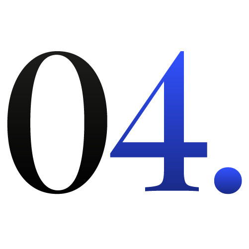

Logo
Logo, jest najkrótszą formą wyrazu marki opowiedzianą bez słów.
To fundamentalny element komunikacji wizualnej. Symbol, który reprezentuje wartości Twojej marki, i na którym budowana jest jej rozpoznawalność.
Dowiedz się więcej na temat logo.
To połączenie funkcji i kreatywności, gdy jest zaprojektowane poprawnie i jakościowo sprawia, że marka, którą identyfikuje wygląda profesjonalniej i jest przyjemniejsza w odbiorze. Nie chodzi o profesjonalizm odpowiedni kancelarii prawnej czy przyjemność odpowiednią marce od cukierków, a pewien poziom tych odczuć, który powinien być zapewniony przez każdy projekt.
Prawidłowo wykonany projekt logo posiada cztery najważniejsze cechy, które sprawiają, że funkcjonuje tak jak należy.
- Prostota. Jest łatwy do zapamiętania i rozpoznania
- Oryginalność. Wyróżnia się na tle konkurencji i identyfikuje markę
- Uniwersalność. Dobrze prezentuje się w różnych formatach i rozmiarach oraz w wersjach monochromatycznych
- Ponadczasowość. Jest na tyle trwały by mógł funkcjonować przez lata, bez potrzeby zmiany go
Jak wygląda proces współpracy

Konsultacja i brief
Rozpoczynamy od uzupełnienia briefu, co pozwoli mi poznać Twoją markę, jej cele, wyzwania i grupę odbiorczą. Brief jest maksymalnie prosty, dzięki czemu możemy uzupełnić go telefonicznie lub drogą mailową.
Kierunek prac
Na podstawie zebranych informacji przygotowuję i przedstawiam Ci kilka moodboardów, które pomogą nam określić kierunek stylistyczny projektu. Po akceptacji lub uwagach finalizujemy wybór.


Proces projektowy
Kiedy ustalimy wytyczne wizualne, przechodzę do projektowania. Tworzę rozwiązania graficzne zgodne z ustalonym kierunkiem i dostosowane do specyfiki Twojej marki. Na bieżąco konsultuję postępy i wprowadzam poprawki zgodnie z Twoimi sugestiami.
Finalizacja współpracy
Po zatwierdzeniu projektu przygotowuję wszystkie niezbędne pliki i dokumenty. Następnie przekazuję Ci gotowe materiały oraz prawa.

Kluczowe korzyści
- Identyfikacja marki na rynku
- Zwiększenie widoczności marki dzięki łatwej identyfikacji wśród konkurencji
- Eliminacja kosztów wynikających z częstych zmian słabej jakości logo na nowe
- Zwiększenie zaufania klientów do marki